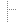
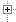

| jjack-0_2_1 | | |
| bin | | |
 |  | jjack.sh | | Script for invoking the JJack shell application. |
| | palette-jjack.xml | | Palette file for the BeanBuilder including the JJack example clients (used by runBeanBuilder.sh). |
| | runBeanBuilder.sh | | Script for starting the BeanBuilder with JJack support. |
|  |  classes classes | | Compiled class files of all source files in src. |
| doc | | |
| | api | | Auto-generated Javadoc API-documentation. |
| | img | | |
| | uml | | |
| | | jjack.png | | UML class diagram giving an overview on the JJack API. |
| | www | | JJack website. |
| | jjack.html | | JJack manual. |
| | jjack-beanbuilder.html | | Creating JJack clients with the BeanBuilder. |
| | jjack-clients.html | | JJack example clients documentation. |
| | jjack-develop.html | | Developing JJack clients. |
| lib | | |
| | i386 | | |
| |  | linux | | |
| | | | libjjack.so | | Native bridge library to connect the Java virtual machine as a JACK client. |
| | jjack.jar | | JJack API classes bundled in one .jar-file. |
| | jjack-clients.jar | | JJack example clients classes bundled in one .jar-file. Can be used as JavaBeans. |
| make | | ANT build script and helper files for building JJack. |
| src | | The project's source files, including utility classes. |
| License.txt | | GNU Lesser General Public License document. |
| Readme.txt | | The readme file with most basic information. |